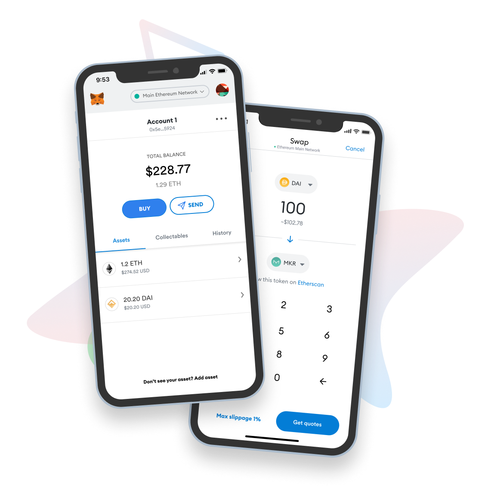
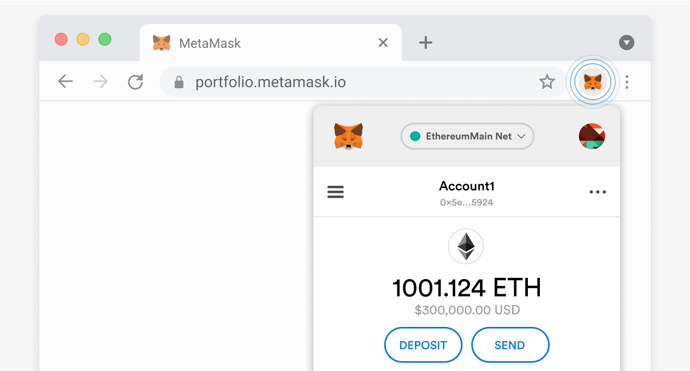
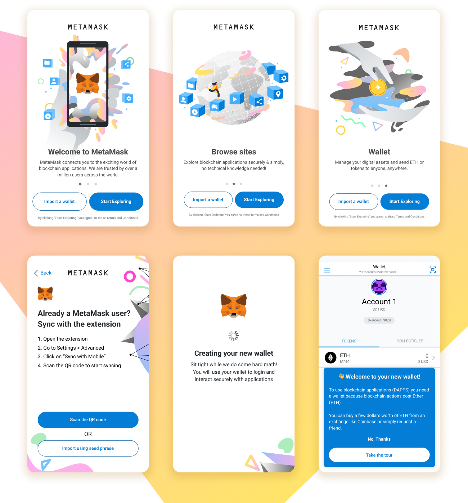
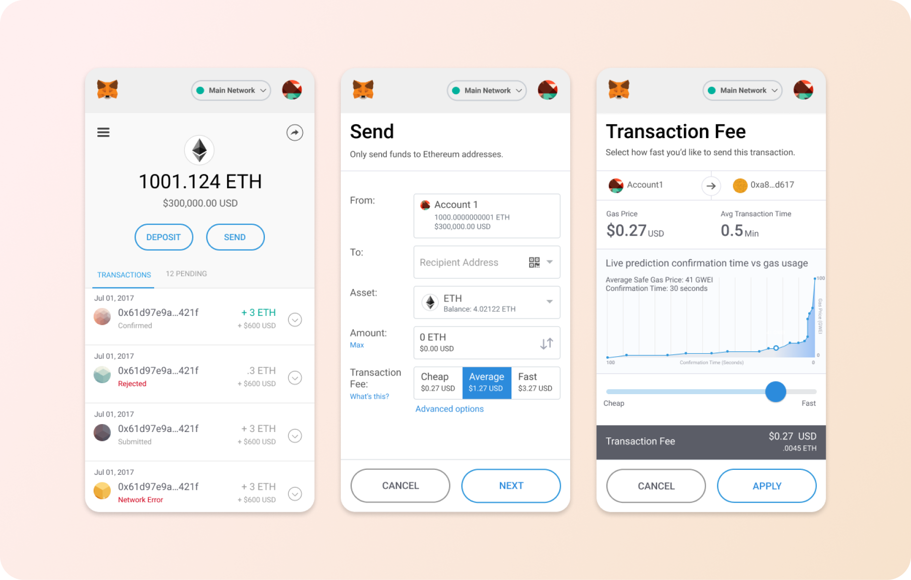
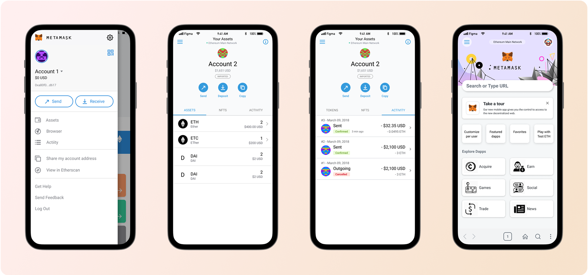
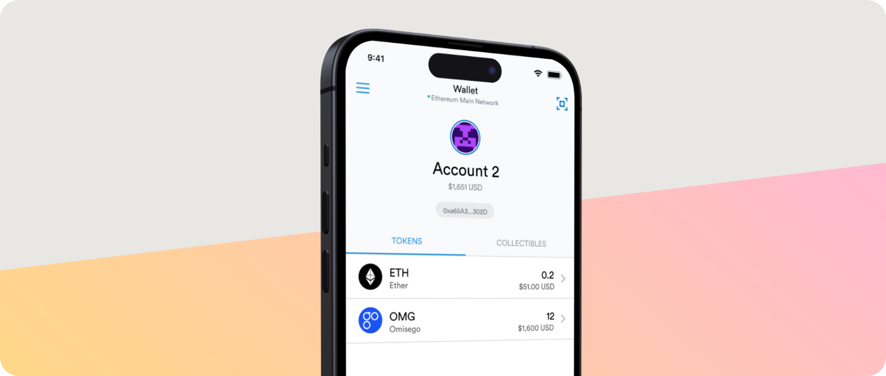

MetaMask
A secure, user-friendly wallet and gateway to the decentralized web, trusted by tens of millions of monthly active users worldwide.

overview
Over the course of several years at MetaMask, I helped shape the experience of one of the world's most widely used web3 products. My work spanned onboarding, wallet interactions, and decentralized app transactions, designing for both seasoned crypto users and those brand new to the space. I also created the now-iconic MetaMask fox logo and mascot, which has become a recognizable symbol of web3 itself.
Featured here is a selection of projects where I led product design and creative direction, with the goal of making decentralized technologies more intuitive, trustworthy, and accessible to millions of people worldwide.
- Role
- Lead Product Designer
- Platform
- iOS & Web
- Live Site
- metamask.io ↗





more work
06 case studies, in order